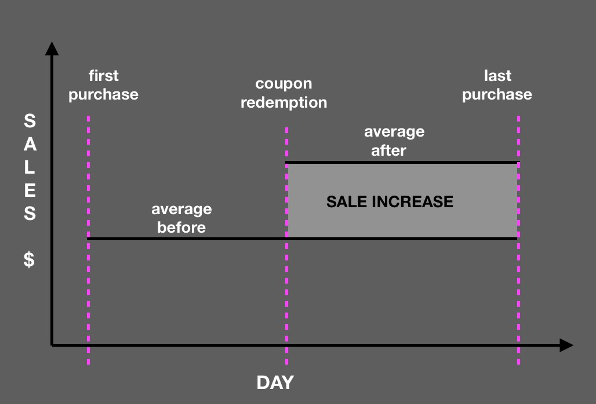

Our dataset contains information about shopping history for a subset of our customers.
We will try to analyze how coupons are used by families and how they change shopping habits.
Coupons are usually released as part of some campaign aimed to promote certain products.
The advertising has a cost from the point of view of the retailer, therefore it must result
in some kind of advantage in sales for the store to be beneficial.
Measuring the effect of a campaign is a complex problem, many hambiental factor coinfluence customers
and it is almost impossible to have an exact impact measure.
Therefore, we will restrict our analysis to a particular effect: we are mostly interested in how
a coupon redemption impact the shopping habits of the customer.
It often happen we buy a product just out of curiosity because there is a discount,
we are naturally attracted by a deal that seems advantageous. Then if we like
what we bought we start buying it, then this initial discount resulted in a gain for
the retailer that compensate the loss of profit in the first shop.
More in general, we want to highlight the difference of purchase before and after a coupon redemption.
We define the sale increase score as shown below.
For each family that use a particular discount we compare the average expense on
the product before and after the coupon redemption. Then, we define the sale increase by day
as the difference between those two values multiplied by the number of days between the coupon
redemption and the last purchase.

The transaction data holds precious information about coupons, but it is not directly available. The first step was identifying the exact transactions in which coupons were used. For that, we crossed the coupon redemption table with some of the attributes in the transaction table, such as:
Once the coupon transactions were identified, it was time to estimate the success of those coupon transactions. We decided to use a statistic that didn't only take into account the sales during the campaign, but also any long-lasting effect on the consumption of the products redeemed by the household.
So, we computed the "estimated total sales increase" as the difference between the daily average sales before and after the coupon was used, multiplied by the number of days from the day the coupon was used until the end of the survey.
This statistic was computed for every coupon transaction, so the daily averages were only computed for the product and the household in that particular coupon transaction.
Campaign success is derived as the sum of the "estimated sales increase" of every coupon transaction associated to the campaign.
Three campaigns stand out: 8, 13 and 18.
When look at the number of coupons redeemed over time, these three camapigns are clearly observable.
The following analysis tries to shed some light on why these three particular campaigns were so successful.
The duration of these campaigns is not related to their success. As a matter of fact, campaign 15 had the longest campaign duartion by far, but had an estimated sales increase close to zero.
One might think that these campaigns had a higher number of coupons than others. As we see they did, but also did campaigns 26 and 30 and they were not nearly as successful.
However, when we look at the number of families that received these campaigns and at the number of families that participated in them (by at least redeeming one coupon), they really stand out.
Such a big gap might be explained by the fact that these campaigns were targeted at a national level, wheareas others were targeted locally.
Since the demographic data available doesn't contain any indication on where the households live, the best way to indicate how spread a campaign was might be to count the number of different stores in which the coupons associated to that campaign were redeemed. And as we can see, campaigns 8, 13 and 18 were in fact targeted on a larger scale than others.
The effect of coupons on sales can be studied from multiple angles providing each their own insights. A second approach would be to analyze whether demographics play a role when it comes to the effectiveness of the coupons. After going through all demographic carracteristics at our disposal ('Marital Status', 'Age', 'Income', 'Household Size', 'Home Ownership', 'Number of Kids' and 'Household Composition'), some stand out has being linked to coupon use. The demographic carracteristics impacted by coupons are two and none other than 'Age' and 'Household Composition'. As to visualize this impact and show its robustness, we decided to plot below the median score for each categorial value they can take:
GRAPH2
As you can see above, single parents have a substantially higher median score that all other household compositions, this makes sense as we'd expect them to save money by all means necessary to deal with their often delicate situation. Being a single parent seems to positively predict coupon use.
GRAPH3
As you can observe, the youngest age range, '19-24' seems have a low median score in comparison to the rest, this could be interpreted as young adults not needing or caring about the sort of economic optimization that coupons provide, it could be attributed to a lack of experience or a lack of need caused by financial depense of relatives or the state, for example. We can conclude that being a young adult (age 19 to 24) seems to be a negative predictor of coupon use.
Now that we've seen how demographics link to coupon use in the general, it would be nice if we could find markers for groups of even greater interrest, the 'top scorers' and 'worst scorers'.In this context, the first question which comes to mind is: Are there even detached clusters of scorers?
GRAPH4
Well, based on the whiskers of the above box plot, it looks like we'll have to forget about our 'worst scorers' while saying hello to its more important counterpart, the cluster of 'top scorers'.
Let's look at the demographic data the same way we did it for the global dataset and hope some patterns will appear. After close inspection, two demographic features stand-out, and not in the same way as before. The first is 'Age' (again) and the second is 'Household Size', here's what they look like:
GRAPH5
This plot shows us that coupon use increases with household size, exploding for a size of 4, which makes sense if we consider that, the more people you to take care of, to more economically burdened and consequently cautious you might become, using then coupons more often.The pattern breaks for the label '5+', it doesn't seem to be due to a lack of robustness (20+ samples per category, using the median score), so there should be an organic reason for this, it could be for example that mostly rich families grow such large households, leading to a situation where there are many people to support but so many ressources that using coupons is unecessary... Regardless, having a household size of 4 seems to be a positive predictor of coupon use.
GRAPH6
For this second bar plot, we see an increase in score with age, with a final explosion for the last age range '55-64'. As expected, the lowest in score are the young (19-24), like before, probably for the same reasons (financial dependence, lack of experience,...) while the oldest (55-64) are the highest in median score, maybe thanks to their experience and the larger amounts of free time they often have and can apply to this kind of optimizations. Whatever the case, being 55 to 64 years old also is a positive predictor regarding coupon use.
Now that the link between demographics and coupon use has been established under multiple angles, we let's try and use that link to actually predict coupon use. This will allow us to actually establish how deep this connection runs (through model performance) while building useful tools (models).
The models we're now going to build will predict whether a user is going to use or not the coupons sent to them.
If the model is performant, it could be used to save time, money and paper by allowing companies to predict who's going to just throw
away the coupons they receive and/or what kind of coupons are universally ignored.
PS:
*Since all our features are categorical, we'll use random forests.
*We could check the type of department the coupon is for instead of the type of commodity but,
as you can see below 'DRUG_GM' and 'GROCERIES' cover about 80% of the products,
doing a classification at this level wouldn't be very informative when it comes to the coupon type.
*We only consider type B and C campaigns because they're the only ones which distributed all the different coupons to each
of their participants.
GRAPH7
To reach all these goals, lets build a first model which takes the type of commodity the coupon is for and the demographic data of the household and outputs '0' if no coupon gets used and '1' otherwise. As you can see below, using the commodity type to differentiate coupons gives a very varied and clear picture of their use, that being said, the percentage of household using each kind of coupon follows such a clear pattern from one entry to the other that this categorical value might totally overshadow the contribution of the demographic data.
GRAPH8
The predictions of this first model are around 70% accurate which is decent, mainly considering that both its precision and recall are also around 70%.
Now, to verify whether our fears are warranted, let's build a second model which only takes the commodity type as an input, we keep the same outputs. After training, probably due to the lowering in variance, our accuracy,precision and recall are all around 74%.So yes, sadly, the demographic data brings nothing to the table that the commodity type doesn't, except variance. This is a double edged sword because it also means that we can now train our model on data for which we have no demographic data and an organization that would use such a model wouldn't need to adquire demographic data to use the model. Let's train the model on all the compatible data: As you can see below, the plotting of the percentage of coupon users per commodity type is smoother:
GRAPH9
Sadly, even though we have more samples, the accuracy, precision and recall remain about the same. Now that we have such a decent model, let's predict for which commodity types coupons should and shouldn't be printed ('0' for 'do not print' '1' for 'print'):
GRAPH10
If we were to follow the advice of our classifier, about 40% of the coupons would not be printed!
Now, we still have a last question to answer: 'How predictive the demographic data really is?' Let's build a last model to figure that out, let's just use the demographic data as input and assign label '1' if a level 'thr' of discount has been applied by the ohusehold and '0' otherwise.'thr' (the threshold) is there and chosen in such a way that we get a balanced amount of '0' and '1' labels (to get a decent precision and recall). Once the model trained, we obtain a precion,recall and accuracy of about 58%, it's barely better than random but not totally, exposing the existing (even if weak) predictive power apported by the demographic data while making clear why it was totally overshadowed by the one of the commodity type.
In conclusion, the demographic data is somewhat predictive of coupon use, but collinearily and way more weakly than the commodity type. It's then not a good choice to use the demographic data as a predictor of coupon use, focusing on the coupon type is way more productive and actually way less restrictive (less data to collect and no privacy to breach).